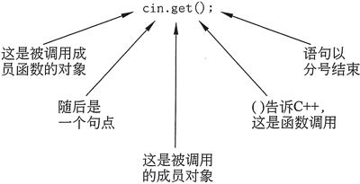
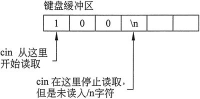
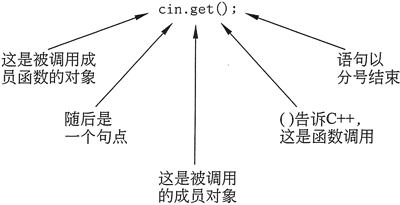
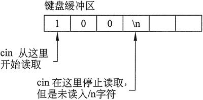

首页 > 编程笔记
C++ cin.get用法（详解版）
与字符串输入一样，有时候使用 cin>> 读取字符也不会按我们想要的结果行事。
例如，因为它会忽略掉所有前导白色空格，所以使用 cin>> 就不可能仅输入一个空格或回车符。除非用户输入了空格键、制表符之外的其他字符，否则程序将不可能通过 cin 语句继续执行（一旦输入了这样的字符，在程序可以继续下一个语句之前，仍然需要按回车键）。因此，要求用户“按回车键继续”的程序，不能使用 >> 运算符只读取按回车键的行为。
在这些情况下，cin 对象有一个名为 get 的内置函数很有帮助。因为 get 函数是内置在 cin 对象中的，所以可称之为 cin 的一个成员函数。get 成员函数读取单个字符，包括任何白色空格字符。如果程序需要存储正在读取的字符，则可以通过以下任意一种方式调用 get 成员函数。
在这两个例子中，假设 cin 是正被读入字符的 char 变量的名称：

图 1 成员函数调用的基本格式
下面的程序演示了使用 get 成员函数的所有 3 种方式：
在示例代码段中，当执行第 4 行时，用户输入一个数字，然后按回车键。假设输入的是数字 100。按回车键会导致一个换行符('\n')存储在键盘缓冲区数字 100 之后，如图 2 所示。

图 2 键盘缓冲区存储和读取示意图
当第 4 行中的 cin>> 语句读取用户输入的数据时，它会在遇到换行符时停止。换行字符未被读取，而是仍保留在键盘缓冲区中。从键盘读取数据的输入语句只在键盘缓冲区为空时等待用户输入值，但现在不为空。
当第 6 行中的 cin.get 函数执行时，它开始从先前输入操作停止的键盘缓冲区读取，并发现了换行符，所以它无须等待用户输入另一个值。这种问题最直接的解决办法是使用 cin.ignore 函数。
例如，因为它会忽略掉所有前导白色空格，所以使用 cin>> 就不可能仅输入一个空格或回车符。除非用户输入了空格键、制表符之外的其他字符，否则程序将不可能通过 cin 语句继续执行（一旦输入了这样的字符，在程序可以继续下一个语句之前，仍然需要按回车键）。因此，要求用户“按回车键继续”的程序，不能使用 >> 运算符只读取按回车键的行为。
在这些情况下，cin 对象有一个名为 get 的内置函数很有帮助。因为 get 函数是内置在 cin 对象中的，所以可称之为 cin 的一个成员函数。get 成员函数读取单个字符，包括任何白色空格字符。如果程序需要存储正在读取的字符，则可以通过以下任意一种方式调用 get 成员函数。
在这两个例子中，假设 cin 是正被读入字符的 char 变量的名称：
cin.get (ch);
ch = cin.get();
cin.get();
请注意，在所有这 3 个编程语句中，get 函数调用的格式实际上是一样的。首先是对象的名称，在此示例中它是 cin。然后是一个句点，其后是被调用的成员函数的名称，在这里当然就是 get。语句的末尾是一组括号和一个表示结束的分号。这是调用任何成员函数的基本格式，如图 1 所示。
图 1 成员函数调用的基本格式
下面的程序演示了使用 get 成员函数的所有 3 种方式：
// This program demonstrates three ways to use cin.get() // to pause a program. #include <iostream> using namespace std; int main() { char ch; cout << "This program has paused. Press Enter to continue."; cin.get(ch); cout << "It has paused a second time. Please press Enter again."; ch = cin.get(); cout << "It has paused a third time. Please press Enter again."; cin.get(); cout << "Thank you! \n"; return 0; }程序输出结果:
This program has paused. Press Enter to continue.
It has paused a second time. Please press Enter again.
It has paused a third time. Please press Enter again.
Thank you!
混合使用 cin>> 和 cin.get
将 cin >> 与 cin.get 混合使用可能会导致烦人且难以发现的问题。请看下面的代码段示例：char ch; //定义一个字符变量 int number; //定义一个整型变量 cout << "Enter a number: ”; cin >> number; // 读取整数 cout << "Enter a character: "; ch = cin.get() ; // 读取字符 cout << "Thank You!\n";这些语句允许用户输入一个数字，而不是一个字符。看来第 6 行的 cin.get 语句已经被跳过了。这是因为 cin>> 和 cin.get 使用略有不同的技术来读取数据。
在示例代码段中，当执行第 4 行时，用户输入一个数字，然后按回车键。假设输入的是数字 100。按回车键会导致一个换行符('\n')存储在键盘缓冲区数字 100 之后，如图 2 所示。

图 2 键盘缓冲区存储和读取示意图
当第 4 行中的 cin>> 语句读取用户输入的数据时，它会在遇到换行符时停止。换行字符未被读取，而是仍保留在键盘缓冲区中。从键盘读取数据的输入语句只在键盘缓冲区为空时等待用户输入值，但现在不为空。
当第 6 行中的 cin.get 函数执行时，它开始从先前输入操作停止的键盘缓冲区读取，并发现了换行符，所以它无须等待用户输入另一个值。这种问题最直接的解决办法是使用 cin.ignore 函数。
关注公众号「站长严长生」，在手机上阅读所有教程，随时随地都能学习。内含一款搜索神器，免费下载全网书籍和视频。

微信扫码关注公众号